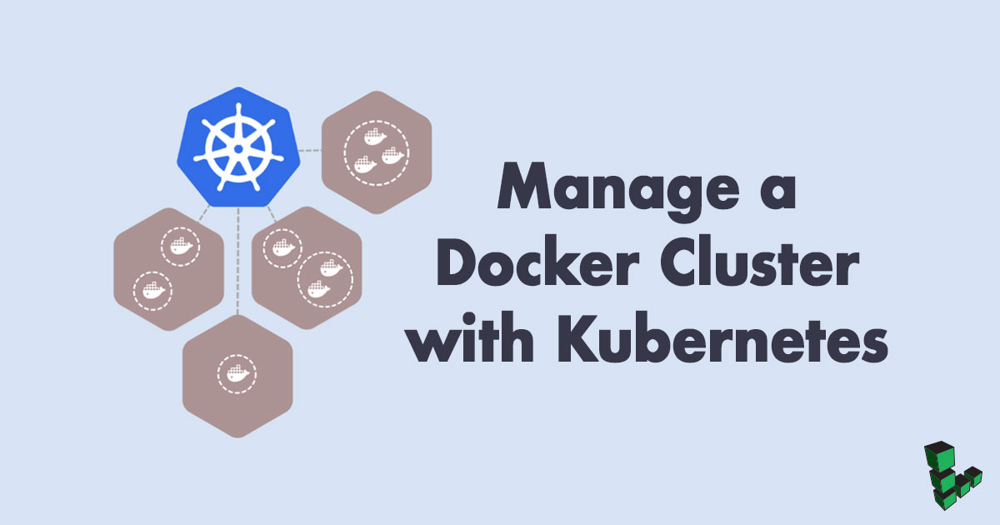
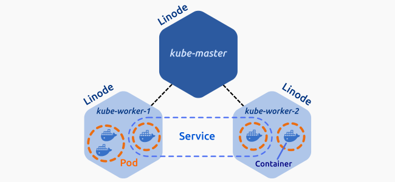

Manage a Docker Cluster with Kubernetes
Updated by Linode Contributed by Damaso Sanoja

What is a Kubernetes Cluster?
Kubernetes is an open source platform for managing containerized applications. If you use Docker for an application deployed on multiple Linodes, a Kubernetes cluster can manage your servers and deployments, including tasks such as scaling, deployment, and rolling upgrades.
A Kubernetes cluster consists of at least one master node and several worker nodes. The master node runs the API server, the scheduler and the controller manager, and the actual application is deployed dynamically across the cluster.
NoteYou can now create a Kubernetes cluster with one command using the Linode CLI. To provision Kubernetes on Linodes, this tool uses the Linode Kubernetes Terraform module, the Linode Cloud Controller Manager (CCM), and the Container Storage Interface (CSI) Driver for Linode Block Storage. See the Kubernetes Tools page for installation steps. For an in-depth dive into the the Linode Kubernetes Terraform module, see its related Community Site post.
System Requirements
To complete this guide you will need three Linodes running Ubuntu 16.04 LTS, each with at least 4GB of RAM. Before beginning this guide, you should also use the Linode Manager to generate a private IP address for each Linode.
Before You Begin
This article requires that you first complete our How to Install, Configure, and Deploy NGINX on a Kubernetes Cluster guide and follow the procedures described there to configure one master node and two worker nodes.
Set the hostnames of the three Linodes as follows:
- Master node:
kube-master - First worker node:
kube-worker-1 - Second worker node:
kube-worker-2
Unless otherwise stated, all commands will be executed from the kube-master.
Kubernetes Pods
A Pod is a group of one or more tightly coupled containers that share resources such as storage and network. Containers inside a pod are started, stopped, and replicated as a group.

Create a Deployment
Deployments are high-level objects that can manage pod creation and allow the use of features such as declarative scaling and rolling-upgrade.
In a text editor, create
nginx.yamland add the following content:- ~/nginx.yaml
-
1 2 3 4 5 6 7 8 9 10 11 12 13 14 15 16 17 18 19 20 21apiVersion: apps/v1 kind: Deployment metadata: name: nginx-server labels: app: nginx spec: replicas: 1 selector: matchLabels: app: nginx template: metadata: labels: app: nginx spec: containers: - name: nginx image: nginx:1.13-alpine ports: - containerPort: 80
The file contains all the necessary information to specify a deployment, including the Docker image to use, number of replicas, and the container port. For more information about deployment configuration, see the documentation.
Create your first deployment:
kubectl create -f nginx.yaml --recordList your deployments:
kubectl get deploymentsNAME DESIRED CURRENT UP-TO-DATE AVAILABLE AGE nginx-server 1 1 1 1 13sCheck that your pod is present:
kubectl get podsNAME READY STATUS RESTARTS AGE nginx-server-b9bc6c6b5-d2gqv 1/1 Running 0 58sTo see which node the deployment was created on, add the
-o wideflag:kubectl get pods -o wideNAME READY STATUS RESTARTS AGE IP NODE nginx-server-b9bc6c6b5-d2gqv 1/1 Running 0 1m 192.168.255.197 kube-worker-02
Scale Deployments
Kubernetes makes it easy to scale deployments to add or remove replicas.
Increase the number of replicas to 8:
kubectl scale deployment nginx-server --replicas=8Check the availability of your new replicas:
kubectl get pods -o wideNAME READY STATUS RESTARTS AGE IP NODE nginx-server-b9bc6c6b5-4mdf6 1/1 Running 0 41s 192.168.180.10 kube-worker-1 nginx-server-b9bc6c6b5-8mvrd 1/1 Running 0 3m 192.168.180.9 kube-worker-1 nginx-server-b9bc6c6b5-b99pt 1/1 Running 0 40s 192.168.180.12 kube-worker-1 nginx-server-b9bc6c6b5-fjg2c 1/1 Running 0 40s 192.168.127.12 kube-worker-2 nginx-server-b9bc6c6b5-kgdq5 1/1 Running 0 41s 192.168.127.11 kube-worker-2 nginx-server-b9bc6c6b5-mhb7s 1/1 Running 0 40s 192.168.180.11 kube-worker-1 nginx-server-b9bc6c6b5-rlf9w 1/1 Running 0 41s 192.168.127.10 kube-worker-2 nginx-server-b9bc6c6b5-scwgj 1/1 Running 0 40s 192.168.127.13 kube-worker-2The same command can be used to decrease the number of replicas:
kubectl scale deployment nginx-server --replicas=3
Rolling Upgrades
Managing pods with a Deployment allows you to make use of rolling upgrades. A rolling upgrade is a mechanism that allows you to update your application version without any downtime. Kubernetes ensures that at least 25% of your Pods are available at all times and creates new pods before deleting the old ones.
Upgrade your containers’ NGINX version from 1.13 to 1.13.8:
kubectl set image deployment/nginx-server nginx=nginx:1.13.8-alpineSimilar to the scaling process, the
setcommand uses declarative approach: you specify the desired state and the controller manages all necessary tasks to accomplish that goal.Check the update status:
kubectl rollout status deployment/nginx-serverWaiting for rollout to finish: 1 out of 3 new replicas have been updated... Waiting for rollout to finish: 1 out of 3 new replicas have been updated... Waiting for rollout to finish: 1 out of 3 new replicas have been updated... Waiting for rollout to finish: 2 out of 3 new replicas have been updated... Waiting for rollout to finish: 2 out of 3 new replicas have been updated... Waiting for rollout to finish: 2 out of 3 new replicas have been updated... Waiting for rollout to finish: 1 old replicas are pending termination... Waiting for rollout to finish: 1 old replicas are pending termination... deployment "nginx-server" successfully rolled outYou can manually check the application version with the
describecommand:kubectl describe pod <pod-name>In the event of an error, the rollout will hang and you will be forced to cancel by pressing CTRL+C. Test this by setting an invalid NGINX version:
kubectl set image deployment/nginx-server nginx=nginx:1.18.Check your current pods:
kubectl get pods -o wideNAME READY STATUS RESTARTS AGE IP NODE nginx-server-76976d4555-7nv6z 1/1 Running 0 3m 192.168.127.15 kube-worker-2 nginx-server-76976d4555-wg785 1/1 Running 0 3m 192.168.180.13 kube-worker-1 nginx-server-76976d4555-ws4vf 1/1 Running 0 3m 192.168.127.14 kube-worker-2 nginx-server-7ddd985dd6-mpn9h 0/1 ImagePullBackOff 0 2m 192.168.180.16 kube-worker-1The pod
nginx-server-7ddd985dd6-mpn9his trying to upgrade to an nonexistent version of NGINX.Get more details about the error by inspecting this pod:
kubectl describe pod nginx-server-7ddd985dd6-mpn9hSince you used the
--recordflag when creating the deployment, you can retrieve the complete revision history:kubectl rollout history deployment/nginx-serverREVISION CHANGE-CAUSE 1 kubectl scale deployment nginx-server --replicas=3 2 kubectl set image deployment/nginx-server nginx=nginx:1.13.8-alpine 3 kubectl set image deployment/nginx-server nginx=nginx:1.18You can then roll back to an earlier, working revision. To revert to the previous revision, use the
undocommand:kubectl rollout undo deployment/nginx-serverTo roll back to a specific revision, specify the target revision with the
--to-revisionoption:kubectl rollout undo deployment/nginx-server --to-revision=1
Kubernetes Services
You now have a deployment running three pods of an NGINX application. In order to expose the pods to the internet, you need to create a service. In Kubernetes a service is an abstraction that allows pods to be accessible at all times. Services automatically handle IP changes, updates, and scaling, so once the service is enabled your application will be available as long as a running pod remains active.
Configure a test service:
- ~/nginx-service.yaml
-
1 2 3 4 5 6 7 8 9 10 11 12 13 14 15apiVersion: v1 kind: Service metadata: name: nginx-service labels: run: nginx spec: type: NodePort ports: - port: 80 targetPort: 80 protocol: TCP name: http selector: app: nginx
Create the service:
kubectl create -f nginx-service.yamlCheck the status of the new service:
kubectl get servicesNAME TYPE CLUSTER-IP EXTERNAL-IP PORT(S) AGE kubernetes ClusterIP 10.96.0.1 <none> 443/TCP 2d nginx-service NodePort 10.97.41.31 <none> 80:31738/TCP 38mThe service is running and accepting connections on port 31738.
Test the service:
curl <MASTER_LINODE_PUBLIC_IP_ADDRESS>:<PORT(S)>View additional information about this service with the
describecommand:kubectl describe service nginx-serviceName: nginx-service Namespace: default Labels: run=nginx Annotations: <none> Selector: app=nginx Type: NodePort IP: 10.97.41.31 Port: http 80/TCP TargetPort: 80/TCP NodePort: http 31738/TCP Endpoints: 192.168.127.14:80,192.168.127.15:80,192.168.180.13:80 Session Affinity: None External Traffic Policy: Cluster Events: <none>
Kubernetes Namespaces
Namespaces are logical environments that offer the flexibility to divide Cluster resources between multiple teams or users.
List the available namespaces:
kubectl get namespacesdefault Active 7h kube-public Active 7h kube-system Active 7hAs the name implies, the
defaultnamespace is where your deployments will be placed if no other namespace is specified.kube-systemis reserved for objects created by Kubernetes andkube-publicis available for all users. Namespaces can be created from a.jsonfile or directly from the command line.Create a new file named
dev-namespace.jsonfor the Development environment:- ~/home/dev-namespace.json
-
1 2 3 4 5 6 7 8 9 10{ "kind": "Namespace", "apiVersion": "v1", "metadata": { "name": "development", "labels": { "name": "development" } } }
Create the namespace in your cluster:
kubectl create -f dev-namespace.jsonList the namespaces again:
kubectl get namespaces
Contexts
In order to use your namespaces you need to define the context where you want to employ them. Kubernetes contexts are saved in the kubectl configuration.
View your current configuration:
kubectl config viewCheck in what context you are working on:
kubectl config current-contextAdd the
devcontext using the command:kubectl config set-context dev --namespace=development \ --cluster=kubernetes \ --user=kubernetes-adminSwitch to the
devcontext/namespace:kubectl config use-context devVerify the change:
kubectl config current-contextReview your new configuration:
kubectl config viewPods within a namespace are not visible to other namespaces. Check this by listing your pods:
kubectl get podsThe message “No resources found” appears because you have no pods or deployments created in this namespace. You still can view these objects with the
--all-namespacesflag:kubectl get services --all-namespaces
Labels
Any object in Kubernetes can have a label attached to it. Labels are key value pairs that make it easier to organize, filter, and select objects based on common characteristics.
Create a test deployment for this namespace. This deployment will include the
nginxlabel:- ~/my-app.yaml
-
1 2 3 4 5 6 7 8 9 10 11 12 13 14 15 16 17 18 19 20 21apiVersion: apps/v1 kind: Deployment metadata: name: my-app labels: app: my-app spec: replicas: 4 selector: matchLabels: app: nginx template: metadata: labels: app: nginx spec: containers: - name: nginx image: nginx:1.12-alpine ports: - containerPort: 80
Create the deployment:
kubectl create -f my-app.yaml --recordIf you need to find a particular pod within your cluster, rather than listing all of the pods it is usually more efficient to search by label with the
-loption:kubectl get pods --all-namespaces -l app=nginxOnly the pods in the
defaultanddevelopmentnamespace are listed because they have the labelnginxincluded in their definition.
Kubernetes Nodes
A node may be a physical machine or a virtual machine. In this guide each Linode is a node. Think of nodes as the uppermost level in the Kubernetes abstraction model.
List your current nodes:
kubectl get nodesNAME STATUS ROLES AGE VERSION kube-master Ready master 21h v1.9.2 kube-worker-1 Ready <none> 19h v1.9.2 kube-worker-2 Ready <none> 17h v1.9.2For more detail, add the
-oflag:kubectl get nodes -o wideThe information displayed is mostly self-explanatory and useful for checking that all nodes are ready. You can also use the
describecommand for more detailed information about a specific node:kubectl describe node kube-worker-1
Node Maintenance
Kubernetes offers a very straightforward solution for taking nodes offline safely.
Return to the default namespace where you have a running service for NGINX:
kubectl config use-context kubernetes-admin@kubernetesCheck your pods:
kubectl get pods -o widePrevent new pods creation on the node
kube-worker-2:kubectl cordon kube-worker-2Check the status of your nodes:
kubectl get nodesNAME STATUS ROLES AGE VERSION kube-master Ready master 4h v1.9.2 kube-worker-1 Ready <none> 4h v1.9.2 kube-worker-2 Ready,SchedulingDisabled <none> 4h v1.9.2To test the Kubernetes controller and scheduler, scale up your deployment:
kubectl scale deployment nginx-server --replicas=10List your pods again:
kubectl get pods -o wideNAME READY STATUS RESTARTS AGE IP NODE nginx-server-b9bc6c6b5-2pnbk 1/1 Running 0 11s 192.168.188.146 kube-worker-1 nginx-server-b9bc6c6b5-4cls5 1/1 Running 0 11s 192.168.188.148 kube-worker-1 nginx-server-b9bc6c6b5-7nw5m 1/1 Running 0 3d 192.168.255.220 kube-worker-2 nginx-server-b9bc6c6b5-7s7w5 1/1 Running 0 44s 192.168.188.143 kube-worker-1 nginx-server-b9bc6c6b5-88dvp 1/1 Running 0 11s 192.168.188.145 kube-worker-1 nginx-server-b9bc6c6b5-95jgr 1/1 Running 0 3d 192.168.255.221 kube-worker-2 nginx-server-b9bc6c6b5-md4qd 1/1 Running 0 3d 192.168.188.139 kube-worker-1 nginx-server-b9bc6c6b5-r5krq 1/1 Running 0 11s 192.168.188.144 kube-worker-1 nginx-server-b9bc6c6b5-r5nd6 1/1 Running 0 44s 192.168.188.142 kube-worker-1 nginx-server-b9bc6c6b5-ztgmr 1/1 Running 0 11s 192.168.188.147 kube-worker-1There are ten pods in total but new pods were created only in the first node.
Tell
kube-worker-2to drain its running pods:kubectl drain kube-worker-2 --ignore-daemonsetsnode "kube-worker-2" already cordoned WARNING: Ignoring DaemonSet-managed pods: calico-node-9mgc6, kube-proxy-2v8rw pod "my-app-68845b9f68-wcqsb" evicted pod "nginx-server-b9bc6c6b5-7nw5m" evicted pod "nginx-server-b9bc6c6b5-95jgr" evicted pod "my-app-68845b9f68-n5kpt" evicted node "kube-worker-2" drainedCheck the effect of this command on your pods:
kubectl get pods -o wideNAME READY STATUS RESTARTS AGE IP NODE nginx-server-b9bc6c6b5-2pnbk 1/1 Running 0 9m 192.168.188.146 kube-worker-1 nginx-server-b9bc6c6b5-4cls5 1/1 Running 0 9m 192.168.188.148 kube-worker-1 nginx-server-b9bc6c6b5-6zbv6 1/1 Running 0 3m 192.168.188.152 kube-worker-1 nginx-server-b9bc6c6b5-7s7w5 1/1 Running 0 9m 192.168.188.143 kube-worker-1 nginx-server-b9bc6c6b5-88dvp 1/1 Running 0 9m 192.168.188.145 kube-worker-1 nginx-server-b9bc6c6b5-c2c5c 1/1 Running 0 3m 192.168.188.150 kube-worker-1 nginx-server-b9bc6c6b5-md4qd 1/1 Running 0 3d 192.168.188.139 kube-worker-1 nginx-server-b9bc6c6b5-r5krq 1/1 Running 0 9m 192.168.188.144 kube-worker-1 nginx-server-b9bc6c6b5-r5nd6 1/1 Running 0 9m 192.168.188.142 kube-worker-1 nginx-server-b9bc6c6b5-ztgmr 1/1 Running 0 9m 192.168.188.147 kube-worker-1You are ready now to safely shut down your Linode without interrupting service.
Once you finish your maintenance, tell the controller that this node is available for scheduling again:
kubectl uncordon kube-worker-2
More Information
You may wish to consult the following resources for additional information on this topic. While these are provided in the hope that they will be useful, please note that we cannot vouch for the accuracy or timeliness of externally hosted materials.
Join our Community
Find answers, ask questions, and help others.
This guide is published under a CC BY-ND 4.0 license.